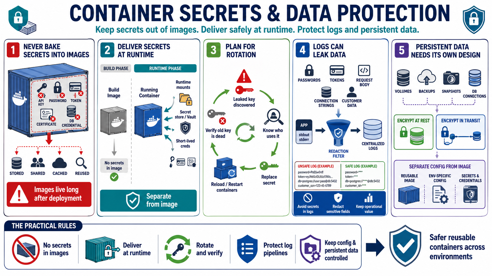

Secrets, Configuration, and Data Protection
Connecting to LMS... Progress: in progress

Narration
Containers often receive configuration through environment variables, mounted files, orchestration settings, or external configuration services. Secrets may include API keys, database passwords, certificates, tokens, and application credentials. The central rule is simple: secrets should not be baked into container images. Images may be stored, copied, cached, scanned, shared, or reused long after the original deployment context changes.
Secret delivery should be separate from image construction. Runtime secret mounts, managed secret stores, short-lived credentials, and rotation workflows are more durable patterns than hardcoded values. Secret rotation concepts should be planned before an incident. If a key leaks, teams need to know which workloads use it, how to replace it, how to restart or reload affected containers, and how to verify that old credentials no longer work.
Logs are another data protection concern. Applications can accidentally write passwords, tokens, request bodies, connection strings, or sensitive customer data to stdout, stderr, or sidecar logging paths. Container platforms make log collection convenient, which means sensitive data can spread quickly into centralized logging systems. Logging should preserve operational value without turning every log pipeline into a secret repository.
Persistent data needs its own design. Volumes, backups, snapshots, and database connections may outlive individual containers. Encryption at rest and in transit, at a high level, protects data when stored and when moving across networks. Configuration should be separated from images so the same artifact can move between environments safely while environment-specific secrets and settings remain controlled.